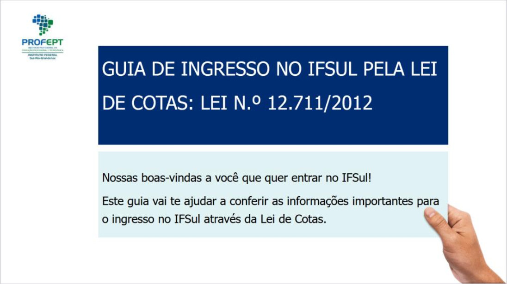

Trabalhos mestrado ProfEPT servidores do câmpus
Documentário Narrativas dos Sujeitos do PROEJA do Curso Secretariado do IFSul Câmpus Venâncio Aires

Para assistir o Documentário, acesse: link
Produto Educacional Mestrado ProfEPT Servidora Giselle Schweickardt “PROGRAMA MULHERES MIL NO CÂMPUS VENÂNCIO AIRES DO IFSUL: HISTÓRIAS DE INCLUSÃO E EMANCIPAÇÃO DE MULHERES”

Livro de memórias (e-book) intitulado “Programa Mulheres Mil no câmpus Venâncio Aires do IFSul: histórias de inclusão e emancipação de mulheres” link
Produto Educacional Mestrado ProfEPT Servidora Danielle Schweickardt “Oficina de bem-estar: um guia prático para atividades em público"

Para acessar o guia, acesse: link
Produto Educacional Mestrado ProfEPT Servidora Daiana Schons

Para acessar o guia, acesse: link